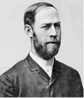
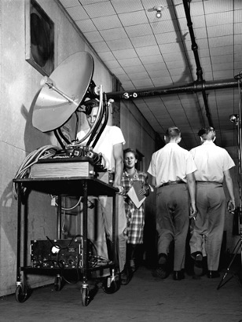

전자파 기술이 발전한 역사는 20세기 초, 더 나아가서는 19세기 말까지 거슬러 올라갈 수 있다.제2차 세계대전에서 레이더의 연구와 제작은 마이크로파 기술의 발전을 가속화시켰고 이것은 독립된 학과라고 불린다.전자파 기술의 발전은 몇 가지 중요한 단계를 거쳤다.

1단계: 1940년 전.
1888년에 독일의 물리학자 헤르츠는 실험을 통해 전자파의 존재를 검증했다.이것은 통상적으로 거시적 전자장 이론 체계가 완비되어 세워진 상징으로 여겨진다.1936년에 미국 베어연구소의 연구원들은 실험을 통해 공심금속관이 마이크로파 출력을 전송할 수 있다는 것을 증명했다.이것은 근대 마이크로파 기술이 발생한 상징으로 볼 수 있다.# 이 단계에서 과학자들은 몇 가지 형식의 마이크로파 전자관을 발명했는데 마이크로파 기술의 발전을 추진하는 결정적인 요소이다.이 단계에서 파도전도, 공강공진기, 마이크로전자관에서 전자장과 운동전하의 상호작용 등에 대한 이론적 연구를 전개하여 마이크로파 기술의 진일보한 발전에 이론적 기반을 다졌다.

2단계: 1940년~1945년.
이 단계는 제2차 세계대전 시기로 레이더를 군사에 응용하는 데 초점이 맞춰져 있다.미국의 MIT공과대학은 유명한 방사능 실험실을 설립하여 레이더의 이론과 기술을 발전시켰다. 많은 유명한 과학자들이 함께 마이크로파 분야의 연구를 급속한 발전 시기로 추진했다.
3단계: 약 1945년 이후.
이 단계는 단계의 실선을 바탕으로 비교적 완전하게 전자학 이론을 세웠다.계속해서 새로운 파단을 개척하고 응용 범위를 확대하는 동시에 일련의 새로운 변두리 과학 분야를 형성했다. 그 중에서 특히 주목해야 할 것은 다음과 같다.
① 1944년부터 지금까지 마이크로파포학과 양자학의 대발전.
② 1946~1971년에 방전천문학의 대발전
③ 1947년부터 지금까지 마이크로웨이브 이용 및 마이크로웨이브 의학의 발전.
④ 1964년에 국제 통신 위성 기구를 설립했다.
⑤ 1965년 이후 마이크로파 회로는 줄곧 고체화되고 소형화되어 발전해 왔다.
현재
1. 더 높은 주파수와 더 짧은 파장으로 과도, 즉 밀리미터파와 아밀리미터파로 발전하여 센티미터파와 레이저파의 공백을 메웠다.
2. 전자파 회로의 소형화, 단편 집적화 방향의 발전, 그리고 MMIC의 광범위한 응용을 연구중이다.
3. 더 많은, 갱신된 마이크로 블로그 응용 분야의 방향을 개척하고 있다.